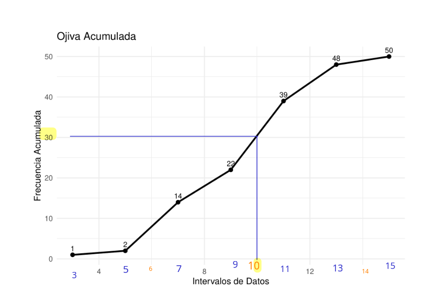
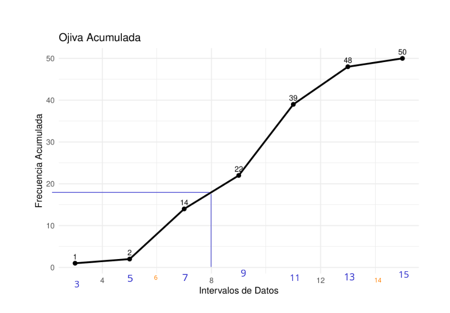

Módulo 3
dgonzalez
PONTIFICIA UNIVERSIDAD JAVERIANA CALI
Departamento de Ciencias Naturales y Matemáticas
300MAE005 Probabilidad y Estadística - grupo A
Profesor: Daniel Enrique González Gómez
Cali, febrero 27 de 2025
PRIMER EXAMEN PARCIAL
Punto 1
Una compañía de seguros de automóviles trabaja con cuatro tipos de autos: Rayquaza, Etenatus, Mewtwo y Groudon, sobre los que cuenta con la siguiente información:
| Marca | Proporción de autos | Probabilidad de Accidente |
|---|---|---|
| R : Rayquaza | \(P(R)=0.27\) | \(P(A|R) =0.03\) |
| E : Etenatus | \(P(E)=0.17\) | \(P(A|E) =0.04\) |
| M : Mewtwo | \(P(M)=0.35\) | \(P(A|M) =0.05\) |
| G : Groudon | \(P(G)=0.21\) | \(P(A|G) =0.06\) |
Construya un diagrama de árbol que represente la información suministrada y a partir de los resultados obtenidos, ayude al gerente de la compañía a conocer qué marca tiene mayor probabilidad de accidente si se sabe que ha ocurrido un accidente (A). Construya un listado de mayor a menor.
Solución

A partir de la identificación de las probabilidades de la tabla procedemos a calcular las probabilidades conjuntas:
P = c(0.27, 0.17, 0.35, 0.21)
C = c(0.03,0.04,0.05,0.06)
P*C[1] 0.0081 0.0068 0.0175 0.0126p = P*C/sum(P*C)
names(p) = c("(3):P(R|A)", "(4):P(E|A)", "(1):P(M|A)", "(2):P(G|A)" )
p(3):P(R|A) (4):P(E|A) (1):P(M|A) (2):P(G|A)
0.1800000 0.1511111 0.3888889 0.2800000 Punto 2
Una de las principales medidas de la calidad de servicio en una organización es la rapidez con la que responde a quejas de clientes. El Centro de Servicios Informáticos de la Universidad está interesado en disminuir el tiempo de atención a quejas relacionadas con el mal funcionamiento de las máquinas virtuales. Se ha seleccionado una muestra con los siguientes tiempos de atención en minutos:
\(\sum_{i=1}^{50} x_i = 500.7\)
\(\sum_{i=1}^{50} x_i^2 = 5869.69\)
\(\sum_{i=1}^{50} (x_i - \bar{x})^2 = 336.4\)
La auditoría desea verificar si el Centro Informático cumple los siguientes lineamientos:
- No poseer datos atípicos.
- No exceder las 10 horas en más del 5% de la muestra.
- Tener un 80% de los tiempos por debajo de 8 horas.
- Tener una distribución con asimetría positiva.
El responsable de la auditoría le solicita revisar el cumplimiento de estos lineamientos y generar un informe breve.
Solución
Primero vamos que valores corresponden las frecuiencias acumuladas registradas en la gáfica

Tambien requerimos estimar los valores de \(Q_1\), \(Q_2\) y \(Q_3\)

Q1 Q2 Q3
6.7 9.2 10.8 Otros datos que podemos obtener de la información suministrada son la media y la varianza
media = 500.7/50
varianza = 336.4
cat("media = ", media, "\n" )media = 10.014 cat("varianza = ", varianza)varianza = 336.4Con esta información daremos respuesta a los interrogantes
- No poseer datos atípicos.
LI = Q[1]- 1.5*Q[3]-Q[1]
LS = Q[3]+ 1.5*Q[3]-Q[1]
cat("Límite inferior ", LI, "\n")Límite inferior -16.2 cat("Límite superior ", LS )Límite superior 20.3Dado que el gráfico indica que no existen valores inferiores a 3, ni superiores a 15, podemos afirmar que no existen datos atípicos
- No exceder las 10 horas en más del 5% de la muestra.
Este requerimiento lo podemos resolver observando la cantidad de datos que tienen valor de 10 o menos

En ella se observa que 30 datos presentan un valor de 10 o menos los cuales representan el 60% (30/50 =0.6). Lo cual indica que este requerimiento no se cumple
- Tener un 80% de los tiempos por debajo de 8 horas.

Al observar la gráfica tenemos que aproximadamente 18 de los datos tienen valores iguales o inferiores a 8 (18/50 = 36). Indica esto que el 36% de los datos presentan valores iguale o inferiores a 8. Este requerimiento tampoco se cumple
- Tener una distribución con asimetría positiva.
Para ello tenemos dos obsiones :
Primero comparando la media y la mediana:
- Si \(\bar{x} \approx Me\), la distribución se considera SIMETRICA
- Si \(\bar{x} > Me\) , la distribución es ASIMETRICA A LA DERECHA o POSITIVA
- Si \(\bar{x} < Me\) , la distribución es ASIMETRICA A LA IZAQUIERDA o NEGATIVA
cat("mediana : ",Q[2], "\n")mediana : 9.2 cat("media : ",media)media : 10.014Los resultados indican una leve asimetria a la derecha
El responsable de la auditoría le solicita revisar el cumplimiento de estos lineamientos y generar un informe breve.
Los anteriores resultados indican que NO se cumplen 3 de los lineamientos decretados por la empresa para la atención de sus clientes. Se recomienda realizar una revisión de todo el proceso y así poder encontrar soluciones que mejore este servicio.